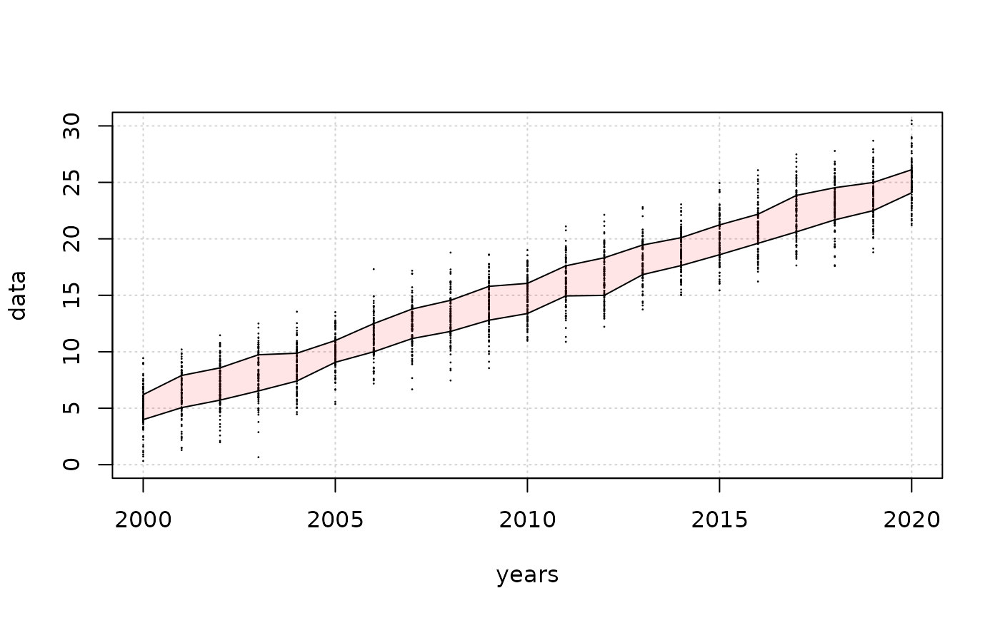

makepolygon simplifies the creation of a polygon from xy data
makepolygon.Rdmakepolygon simplifies the generation of the outline data for plotting a polygon when one has a pair of lines on a graph that one wants to use as the bounds of a polygon. For example, given time-series of biomass trajectories across years, one may wish to impose, say, the 90th quantiles to illustrate how the trends and variation changes through time. One can use single coloured lines o depict such bounds or, alternatively, one can use a polygon filled with an rgb transparent colour to more clearly show the outcome. This would be especially useful when trying to compare different sets of time-series. The overlap and differences would become more clear visually.
Arguments
- y1
the y-axis values for one of the time-series
- y2
the y-axis values for the other series
- x1
the x-axis values (often years) relating to the y1 values
- x2
the x-axis values (often years) relating to the y2 values. It is expected that often x2 will be identical to x1 and so the default value for x2 = NULL, in which case it is set - x1 inside the function
Examples
yrs <- 2000:2020
nyrs <- length(yrs)
reps <- 100
av <- 5:(nyrs+4)
dat <- matrix(0,nrow=reps,ncol=nyrs,dimnames=list(1:reps,yrs))
for (i in 1:nyrs) dat[,i] <- rnorm(reps,mean=av[i],sd=2)
qs <- apply(dat,2,quantile)
poldat <- makepolygon(y1=qs[2,],y2=qs[4,],x1=yrs)
plot(yrs,dat[1,],type="p",pch=16,cex=0.2,col=1,ylim=c(0,30),
panel.first=grid(),xlab="years",ylab="data")
for (i in 1:reps) points(yrs,dat[i,],pch=16,col=1,cex=0.2)
polygon(poldat,border=NULL,col=rgb(1,0,0,0.1))
